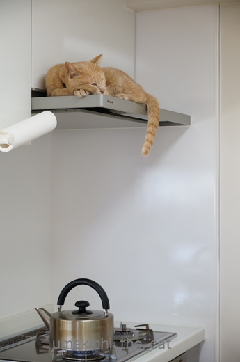
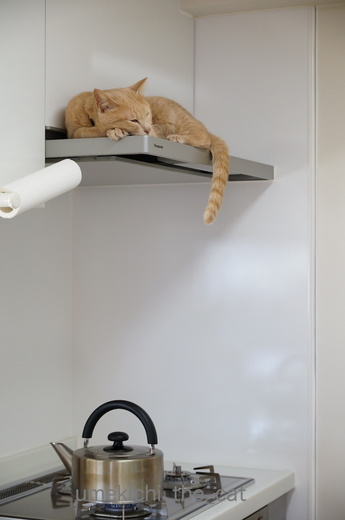

この冬の収穫 [梅吉]
ある時はきりりとお澄ましをして
また、ある時は眠り猫風に・・・・

梅吉さんがいるのは

ガスレンジフードの上です。
おかーさんを監視する場所だけではなく暖がとれる場所だと知った今シーズンの冬。
料理中はもちろんやかんを火にかけると走ってやってきて温まっています。
下からじわじわとくる感じが心地よさそう。

![[猫]](https://blog.ss-blog.jp/_images_e/101.gif) たまらんわぁ・・・・
たまらんわぁ・・・・
冷蔵庫の上に飛び乗ってガスレンジフードの上に移動してくるのですが
「どんっ！！！！！」とすごい音がします。
毎日少しずつレンジフードの取り付け部分が緩んでそのうち落ちてくるのでは・・・
との若干の不安あり(◎_◎)
 ↑ガブッと一押し↑
↑ガブッと一押し↑
先日入居した梅吉さんの新しいお家。
天窓が付いていました。
ずびしっ！！
むぃーっ
あ、姿が見えない！と思ったらだいたいお家の中でじ〜っとしています(ΦωΦ)
住んでよし遊んでよしの優良物件でよろしゅうございました。
おもちゃの羽は残り一枚！オー・ヘンリーみたいになってきた。笑
また、ある時は眠り猫風に・・・・

梅吉さんがいるのは

ガスレンジフードの上です。
おかーさんを監視する場所だけではなく暖がとれる場所だと知った今シーズンの冬。
料理中はもちろんやかんを火にかけると走ってやってきて温まっています。
下からじわじわとくる感じが心地よさそう。

冷蔵庫の上に飛び乗ってガスレンジフードの上に移動してくるのですが
「どんっ！！！！！」とすごい音がします。
毎日少しずつレンジフードの取り付け部分が緩んでそのうち落ちてくるのでは・・・
との若干の不安あり(◎_◎)
先日入居した梅吉さんの新しいお家。
天窓が付いていました。
あ、姿が見えない！と思ったらだいたいお家の中でじ〜っとしています(ΦωΦ)
住んでよし遊んでよしの優良物件でよろしゅうございました。
おもちゃの羽は残り一枚！オー・ヘンリーみたいになってきた。笑

カフェオレ色の梅吉

梅吉 2023年8月10日 永眠


梅吉と出会った譲渡会

犬猫の理由なき殺処分ゼロ
妄想広告
UMEKICHI 光

爆発的に早い！
時々攻撃的！
Thanks to Mr.Boss365
爆発的に早い！
時々攻撃的！
Thanks to Mr.Boss365

梅吉さん♪
とても良い場所？を見つけましたね（笑
火を使っているときはちょいと怖いですが(;^_^A
おぉ～優良物件♪
寝て良し、遊んで良し！
間違い無しですね(#^.^#)
by きぃ (2017-03-12 10:30)
降りるときやかんに体が触れないようにね～
by みぃにゃん (2017-03-12 11:18)
うちでも運動神経の良い2匹が乗っています。梅吉さんもアスリートですからね。猫の見晴台だと勘違いしてます。ちょうど良すぎます。落ちてこないか(フードが)心配です。
by zombiekong (2017-03-12 11:32)
なんとまあ凛々しい梅吉さんの姿だと思ったのですが
賢くて要領も良いですね～
冬場に過ごす場所としては最高ですね～(^_-)-☆
寒い時には半纏でも買って着ればいいのに・・と
奥さんに話した事があるのですが
「ババァみたいに恰好悪いものは着たくない!」と言われました・・
70歳を超えたらどう呼べば良いんでしょうかね～(爆)
by makkun (2017-03-12 12:52)
ひえ〜怖い(・o・)
落っこちないでね、梅吉さん〜！！
うちはこんなに今風じゃなくて昭和の台所ですが
ここ、すんご〜く汚れているはず…(^^;
ゆづが乗っかったら大変なことになりそうです〜
by も〜 (2017-03-12 15:34)
そこはあったかいでしょうね～(*^^*)うちのはフードが斜めになってるのでさすがのきなこも登れません。
by palpal (2017-03-12 16:02)
ひぇ～なんて所に…ああアスリートなんやぁ～
by yamachan (2017-03-12 19:58)
最後の一葉( ;∀;)
絵に描いたじゃらしでは遊んでくれそうにない・・噛めないから^^;
梅吉さん、冷蔵庫には床から直接上がっちゃうんですか？？
それともちぃさんの背中経由？！
by ゆきち (2017-03-12 21:06)
レンジの上の梅吉さん、
暖かそうだけれど、お料理の匂いが染み付いちゃいそう。^^;
by yes_hama (2017-03-12 22:48)
レンジフードの上は、誂えたように梅吉くんにぴったりではありませんか。
座っても良し、寝ても良し、尻尾もおろせます。
by kiki (2017-03-12 23:33)
うちもレンジフードが猫の監視場所ですｗ
梅吉さんもですかーｗ
by sumi-cyan (2017-03-13 00:09)
ほんとに気持ちよさそう～
うちの子たちも、じつは此処狙ってるの。
でも阻止してます。覚えたらヤバそうでしょ。
とくにあおなんて鈍くさいから、落ちたら大変^^;
by リュカ (2017-03-13 09:48)
うわぁ！すごい梅吉さん
我家の子には出来ない運動能力だわ
いいとこ見つけたね 火元注意(笑)
by みいこ (2017-03-13 10:53)
薄くてオサレ換気扇、しかも梅吉君つき！
冷蔵庫からレンジフードへ、さながらキャットウォークですね。
おかーさんの監視をしつつ、料理チェックもしてそう…。
by BillK-ko (2017-03-13 11:14)
梅吉さん凄いですねぇ～
それにしても綺麗なキッチンと換気扇のレンジフード♪
by Moon (2017-03-13 12:51)
こんな高い場所まで上がれるなんて、さすがマッチョな梅吉さんですねぇ♪( ´▽｀)
うちのボーイズが上がったら・・・すぐさま一緒に落下ですw
うちのホケホケボーイズにはこれからも風呂の蓋の上で暖をとってもらおう(⌒-⌒; )
by ニッキー (2017-03-13 21:30)
冷蔵庫からジャンプしての着地ですよね(@_@)
かなりの衝撃のはずです。
レンジフードって、そこまでの衝撃に
耐えることは想定してないやろから
飛び乗った瞬間に崩落という怖い絵が浮かびますー(^_^;)
by よーちゃん (2017-03-14 06:49)
きぃさん＞火を使っている時は必ずおかーさんの監視が付いています＾＾
何かあったら大変ですもの。
せっかくの優良物件すでに破壊が始まりました〜(꒦ິ⌑꒦ີ)
みぃにゃんさん＞は〜い！十分気をつけます(^_-)-☆
zombiekongさん＞見晴台を活用して自宅警備の強化を図っているのかもしれませんね〜＾＾
アスリート・・・って梅吉にぴったりの言葉だわＯ(≧▽≦)Ｏ
makkunさん＞猫はぬくい場所を見つけるのが本当に上手で・・・
冬場お布団の中で湯たんぽを使い出すと
私ではなくちゃんと湯たんぽによしかかって寝ています＾＾
奥様、気合の入った心の持ちよう素敵ですよ〜！！
も〜さん＞梅吉のチェックが入るので冷蔵庫の上、レンジフードの上
結構な頻度で掃除しています・・・・
口うるさい家族が一人いるようなものです^^;
palpalさん＞猫対策のレンジフード、ではないですよね？笑
あれ、ナノくんは。。。。
yamachanさん＞初めは危ない！と思って阻止していたのですが
あまりのしつこさにあきらめました〜。
高いところは必ず制覇せなあかん、とでも思っているのでしょうか・・・
アスリート魂は止められない（＾◇＾）
ゆきちさん＞梅吉なら絵に描いても、というか紙に飛びついてきそうですよ！
もっとも私のヘタを超えたシュールな絵に
「むっ！怪しいヤツ」と闘争心が生まれるのかもしれませんが・・・^^;
冷蔵庫へは食器棚経由、おかーさんの肩（最近肩にも飛び乗る）経由
日替わりで楽しんでいらっしゃいます（＾◇＾）
by ちぃ (2017-03-14 07:18)
yes_hamaさん＞ガスレンジフード由来ではありませんが
お家で焼肉とかすき焼きをすると梅吉も香ばしいお肉の香りに♪
思わずクンクンしちゃいます！
kikiさん＞幅、奥行き共に梅吉にぴったりサイズで＾＾
梅吉も「ここはわしのばしょやな！」と思ったようです。
sumi-cyanさん＞冷蔵庫からいつ美味しいものか出てくるかと
常時監視されているので気が抜けません (>Д< ；)
リュカさん＞危ないよね〜。でもうちは阻止しきれませんでした( ꒪ω꒪)
梅吉ってとってもしつこくて絶対諦めないのよ。
火を使うときは十分気をつけてますよ〜。
みいこさん＞そうなの・・・賢いと言うべきか目敏いと言うべきか^^;
揚げ物（ほとんどしないけど）のときは梅吉隔離！！
by ちぃ (2017-03-14 08:35)
BillK-koさん＞リフォーム時に梅吉スペースになるとは思わずに
「お掃除しやすそうよね！」と選んだレンジフードが間違いだったか・・・^^;
ま、私もお料理しながら梅吉にちょっかいを出して楽しんでます♪
「おかーさんはつまみぐいがすぎるわ・・・」とチェックが入っていそうよ！
Moonさん＞どこでもひょいひょい上がってしまうので気が抜けません・・・
人間の目の届かない「掃除しなくても良いよね〜」と思うところにも
登る・入り込むので掃除にも気が抜けません・・・(꒦ິ⌑꒦ີ)
ニッキーさん＞「ひごろのせいかをみてや！」とばかりにあちこちに飛び乗る飛び乗る！
もう体重増加は絶対にNG！
ちょっとご飯を増やそうかと思っていたのは却下することにしました。
よーちゃん＞きゃ〜〜〜っ！そうですよね〜！！
加速度付きの4.5Kgの衝撃・・・・
とりあえず取り付け部分、見えているネジを回しときます(＠◇＠)
by ちぃ (2017-03-14 11:42)